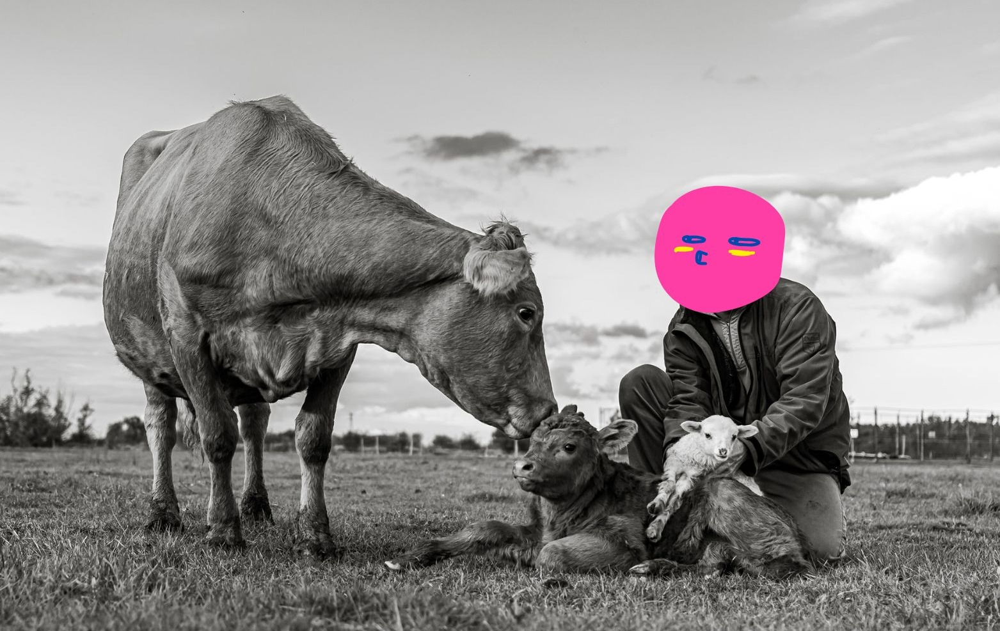

Agrármérnök vagyok. Húsz évig dolgoztam multinál: agronómusként kezdtem, üzemvezetőként folytattam, végül termelési igazgatóként. 2016-ban otthagytam a multit, és visszaköltöztem a földre. main character arc fr.
Azóta ezt csinálom. És literally sokkal jobban szeretem, mint az irodát. W decision
Egy kicsit rólam (lore drop)
- Agrármérnöki diplomám van. Tudom, mit jelent az NPK, és azt is, miért nem csak ez a fontos. (a talaj lore-t akar, nem csak makrótápot.)
- 20 évig multi. Agronómusként kezdtem, aztán üzemvezető lettem, végül termelési igazgató. Vetőmagot, növényvédőt, technológiát adtunk el gazdáknak. Karrier vibe: W. Lélek vibe: mid.
- 2016-ban elegem lett. Pontosabban: rájöttem, hogy amit ott csináltunk, az nem ugyanaz, mint amit otthon szerettem volna csinálni. Otthagytam a multit, megvettem az Agro-Túr Kft.-t, hozzá 12 angus tehenet, és elkezdtem a saját családi gazdaságomat. burned the boats.
- Tíz év alatt felépítettünk valamit, amire büszke vagyok. 22 angus és wagyu marha, 20+ dorper anyajuh, sok bárány, 50–150 csirke évszaktól függően, időnként kacsák, egy komondor és egy komondor-kuvasz keverék kutya. squad complete.
- Körülbelül 80 hektáron gazdálkodunk. Bio kukoricát termesztünk étkezésre és takarmányra, mellette búzát, bükkönyt és egy csomó más kultúrát is. crop diversity W.
- Minden földünk bio-tanúsított. Semmilyen vegyszert nem használunk, sehol. Deadass.
- Regeneratív gazdálkodást csinálunk. Ez azt jelenti, hogy nem csak nem ártunk a talajnak, hanem évről évre javítjuk. Több szervesanyag, több élet, több víztároló képesség. long-term W.
- Folyamatosan kísérletezem új fajtákkal és növényekkel. Magyarország szárazabb lesz, és muszáj alkalmazkodni. Aki most úgy csinál mindent, mint 20 éve, az 10 év múlva nem lesz versenyképes. (skill issue waiting to happen.)
- Öt gyerekem van. A három nagyobb évek óta segít a gazdaságban. Egyikük csinálja most ezt az online értékesítést, amit éppen olvasol. (igen, ő írta ezeket a sorokat is. hi.) A két kicsi, 3 és 6 évesek, még csak úgy tesznek, mintha segítenének, de már most jobban szeretik a teheneket, mint a tévét. iPad kids? not in this house.
Miért árulunk komposztot?
Egyszerű ok: 22 marha + 20 juh + 100 csirke = sok szar. literally.
Komolyabb ok: ha már egyszer kiderült, hogy a saját trágyánkból olyan komposzt készíthető, ami élőbb, tisztább és tápanyagdúsabb, mint bármi a boltban — akkor miért ne osztanánk meg? sharing is caring bestie.
A boltban kapható komposzt nagy része ipari feedlotokból jön. Antibiotikummal kezelt állatok trágyájából. GMO-takarmányról. A miénk bio-tanúsított legelőkről, fűvel etetett állatoktól, saját bio gabonával hizlalva. different lifestyles, different output.
Más a forrás. Más a végeredmény.
És tessék, ezt akarjuk eladni neked. no rizz, just real.
📍 5400 Mezőtúr, Felsőrészinyomás 105. | 📞 +36 39 4596 9764